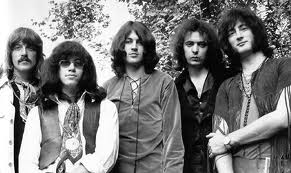

_
I Deep Purple sono un gruppo rock britannico nato nel 1968 a Hertford, Inghilterra. Insieme a
gruppi come Led Zeppelin e Black Sabbath, sono considerati i primi gruppi hard rock della
storia. Si possono considerare i Deep Purple come una delle band musicalmente piu' complete
degli anni 70, con un sostrato musicale che spazia dal blues al rock n'roll, dal funky al jazz e al
folk, della musica orientale alla musica classica.
Ai Deep Purple va attribuita la prima commistione tra umori e temi musicali neoclassici al
tempo e al ritmo tipici del blues e del rock and roll. Il suono della band comprende anche
elementi pop e progressive rock.
© SitoWeb.com | Tutti i diritti riservati.
_